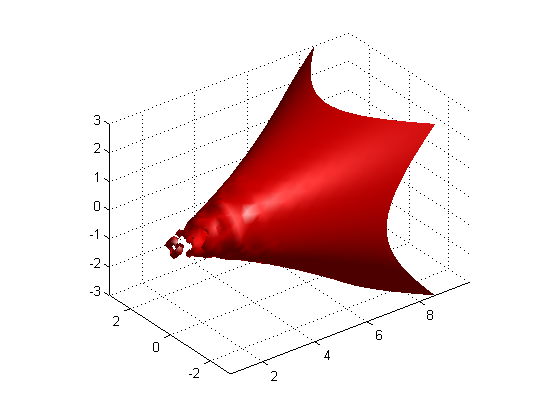

Changing Transparency
Modifying the transparency value for graphics objects reveals structure that is obscured with opaque objects. For patches and surfaces, use the FaceAlpha and EdgeAlpha properties to specify the transparency of faces and edges. The following examples illustrate this.
Contents
A Transparent Isosurface
The flow function generates data for the speed profile of a submerged jet within an infinite tank. One way to visualize this data is by creating an isosurface illustrating where the rate of flow is equal to a specified value.
cla [x y z v] = flow; % Compute and create a patch object from data created from the isosurface with a % isosurface scalar value of -3 p = patch(isosurface(x,y,z,v,-3)); % Get the normals to the isosurface based on the gradients of v - scalar values % at the x,y,z coordinate isonormals(x,y,z,v,p); set(p,'facecolor','red','edgecolor','none'); daspect([1 1 1]);
Change view to 3-D.
view(3); axis tight; grid on;
Add a light source to the scene to give the surface more definition.
camlight;
Apply smooth rather than faceted shading by changing lighting from default 'flat' to 'gouraud'.
lighting gouraud;
 Adding transparency to the isosurface reveals that there is greater complexity in the fluid flow than is visible using the opaque surface. The statement alpha(0.5) sets the FaceAlpha value for the isosurface face to 0.5.
alpha(0.5)
A Texture Map
The MAT file topo.mat has color data representing the different continents on the globe. This example shows how to map this data onto the surface of a sphere.
The sphere function generates coordinates of a sphere. Setting the cdata property of the surface object to topo maps the color data contained in topo for each continent onto the surface of the sphere. In addition, the facecolor property needs to be set to texturemap if the size of the z-data is different from the size of the cdata MATLAB® then fills in the color at z-data points where the color is not specified using interpolation. The software can also map the color data onto the surface if you specify the facealpha transparency property to be of type texture. If this property is not specified, the globe will not be transparent. Other options for facealpha are available. Search for facealpha texture in the doc for more information.
cla reset; load topo; [x y z] = sphere(45); s = surface(x,y,z,'facecolor','texturemap','cdata',topo); set(s,'edgecolor','none','facealpha','texture','alphadata',topo); set(s,'backfacelighting','unlit'); colormap(topomap1); alpha('direct'); alphamap([.1;1]) axis off vis3d; campos([2 13 10]); camlight; lighting gouraud;